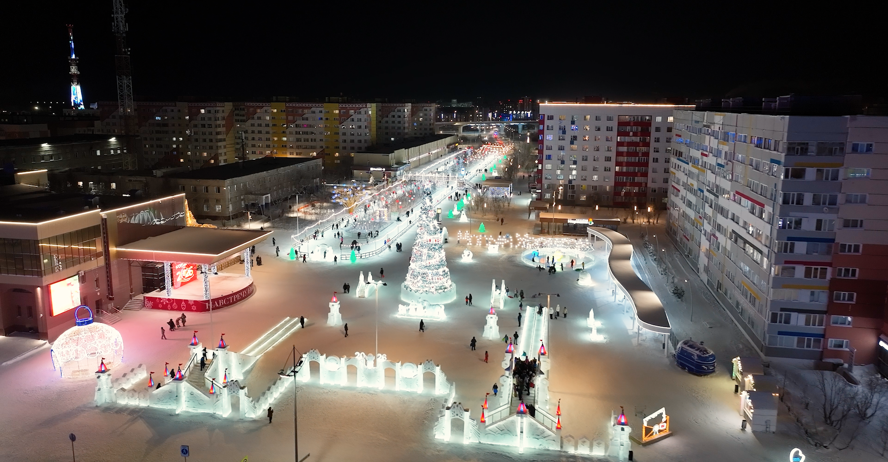

площадь справа от ГДК «Октябрь»
На главной площади Нового Уренгоя, проходят все наиболее значимые мероприятия. Здесь установлен арт-объект «Новый Уренгой». Надпись выполнена из металлических газовых труб. Оба слова образованы единой линией, без отрыва. Этот объект отражает историю города, его неразрывную связь с освоением Уренгойского нефтегазоконденсатного месторождения. Конструкция интерактивная, и интересна юным жителям города: можно покрутить задвижки, как на газовом промысле.
Стела «Часы» с одной стороны, служит арт-объектом в городе, с другой стороны несет в себе историческое значение с функциональным наполнением. Арт-объект выполнен в минималистичном стиле, декорирован местным орнаментом, символами города и округа.
В 2020 году была проведена реконструкция городской площади в рамках большой программы «Комфортная среда». Более 7 000 кв.м. вымощены специальными гранитными плитами, подготовленными к ямальским морозам. Изюминкой стало архитектурное наполнение пространства.
В 2022 году пешеходная зона на улице Интернациональной в газовой столице заняла третье место в федеральном конкурсе лучших практик развития и цифровизации городской среды, благоустройства общественных и дворовых пространств в арктической зоне РФ.
Площадь примыкает к Ленинградскому проспекту, главной улице города, современнику эпохи «большого газа».

{kind=link}